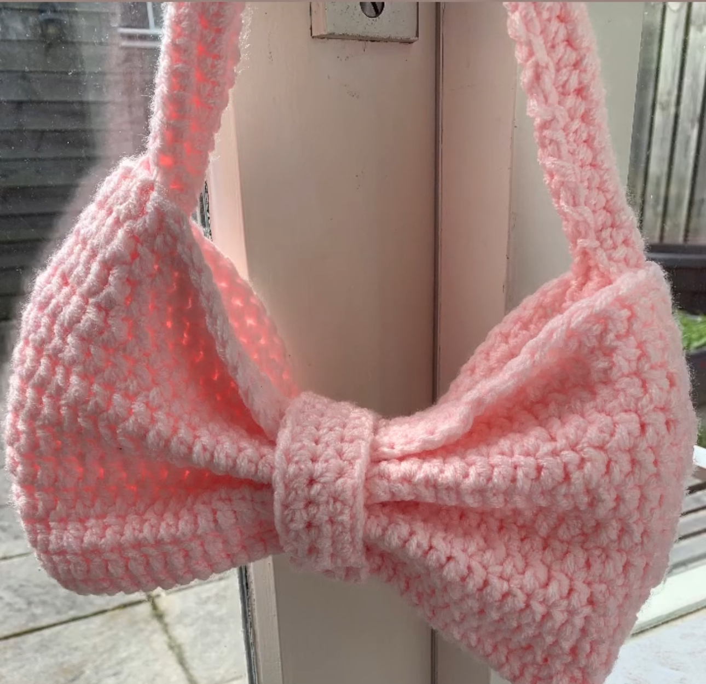
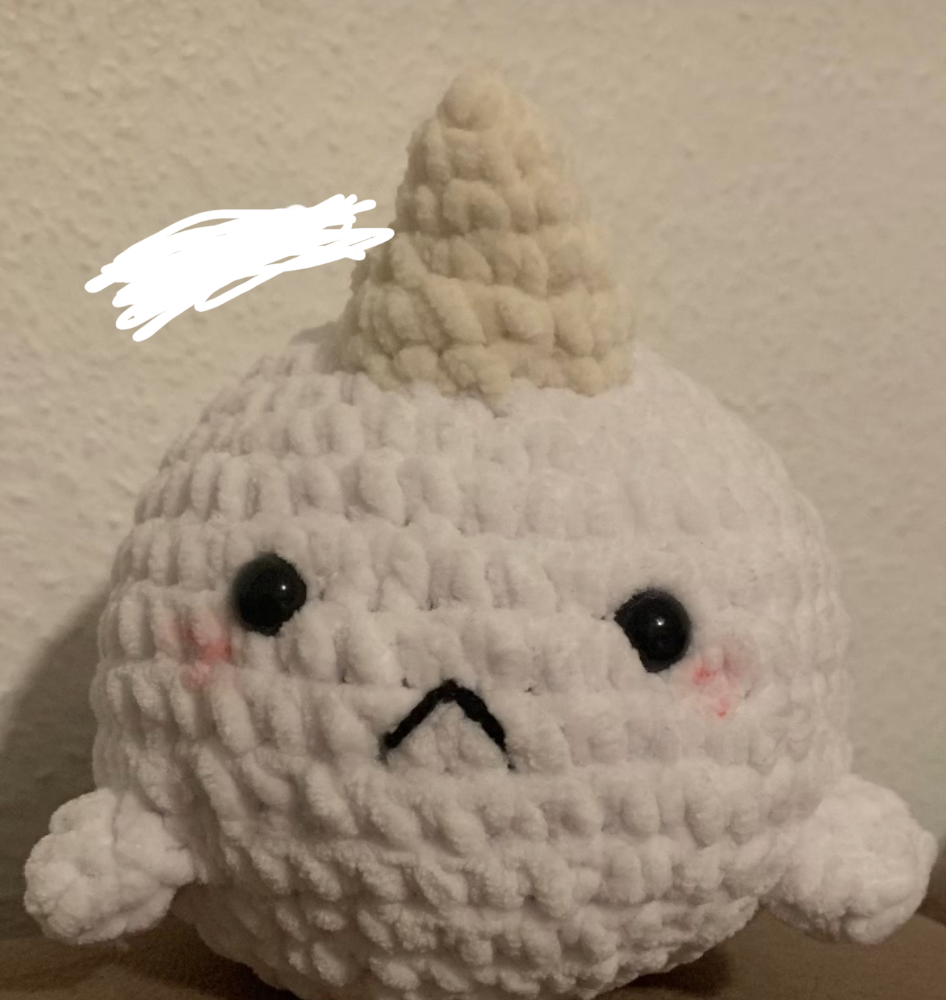
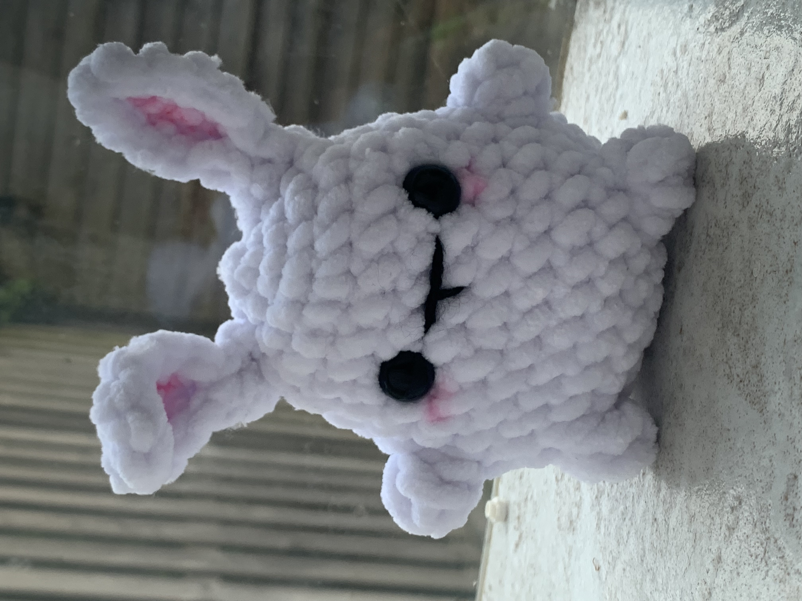
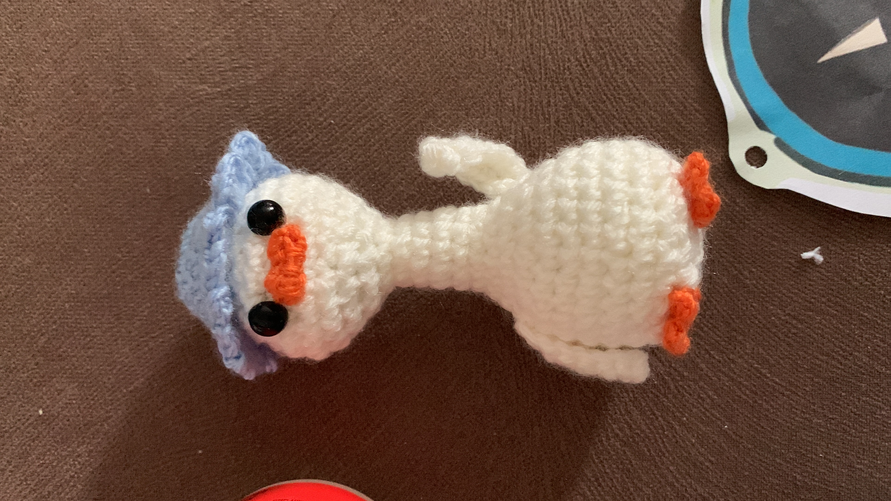

Wat doe ik in mijn vrijetijd? (˶ᵔ ᵕ ᵔ˶) ‹𝟹
Haken
Ik hou ervan om te haken in mijn vrije tijd, omdat het helpt je om te relaxen en houdt je bezig voor een tijdje. Als eind resultaat heb je bijvoord een leuke knuffel of een nieuwe kleding dat je kan dragen.
   
Lezen
Ik hou ervan om te haken in mijn vrije tijd, omdat het helpt je om te relaxen en houdt je bezig voor een tijdje. Als eind resultaat heb je bijvoord een leuke knuffel of een nieuwe kleding dat je kan dragen.